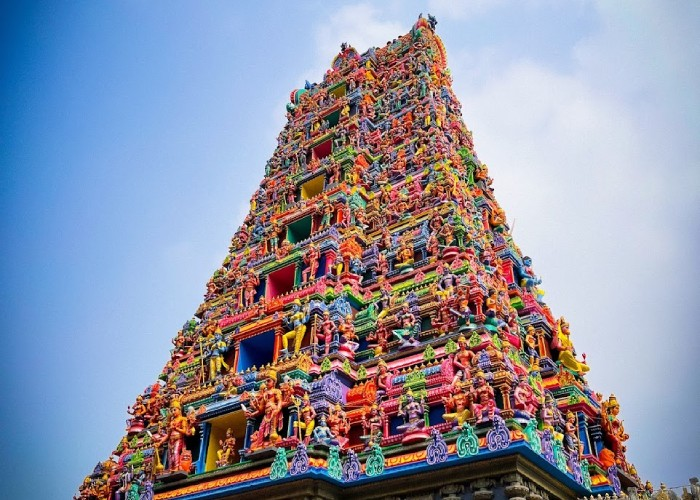
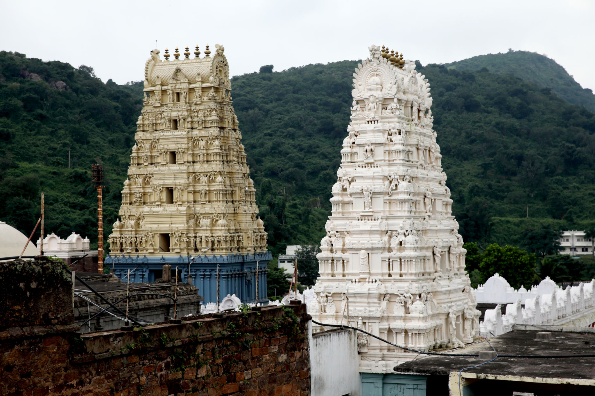
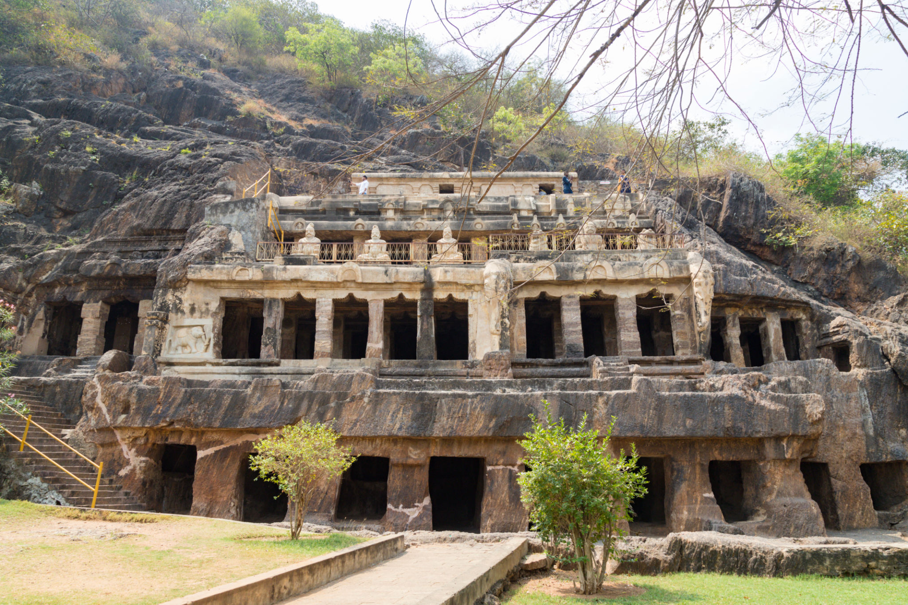
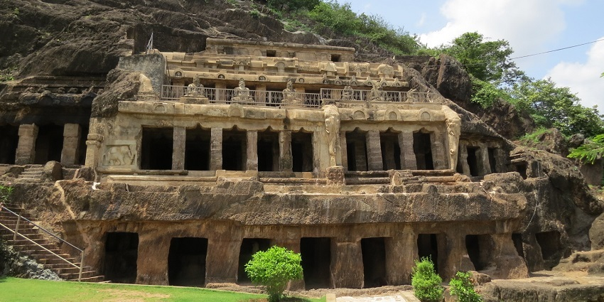
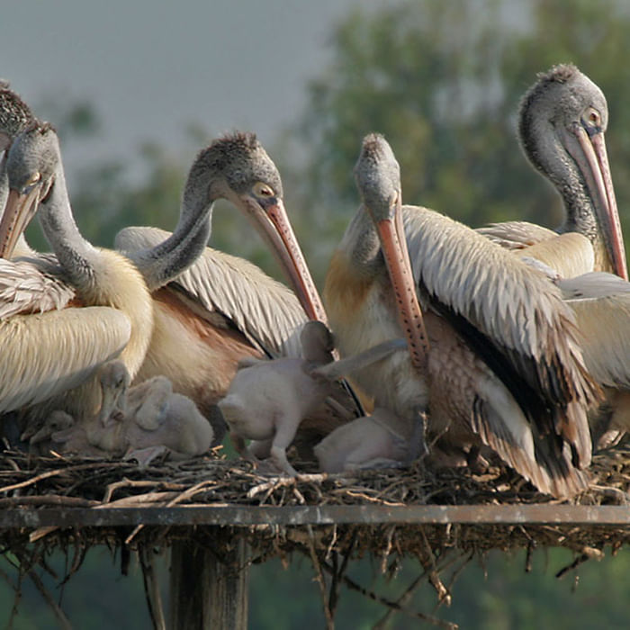
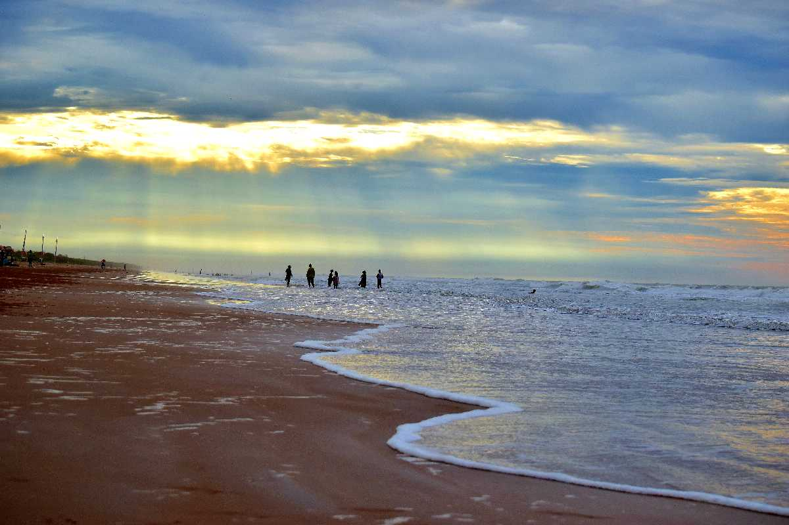
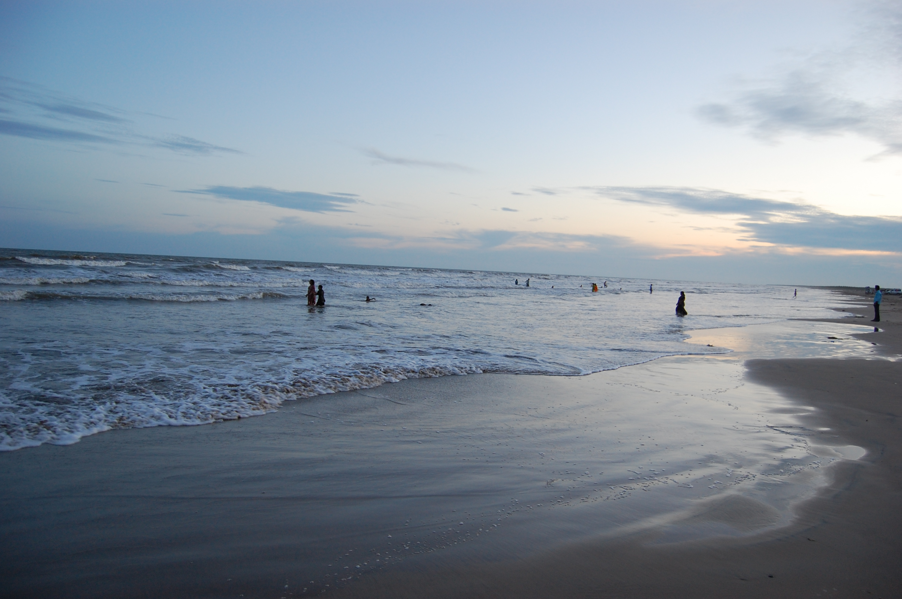

Sacred Temples
Experience divine spirituality and ancient architecture

Kanaka Durga Temple
Indrakeeladri Hill, Vijayawada
One of the most revered temples dedicated to Goddess Durga, offering panoramic views of the Krishna River.

Lakshmi Narasimha Temple
Amaravathi
Ancient temple showcasing exquisite Dravidian architecture and rich cultural heritage.
Heritage Sites
Step back in time and explore historical marvels

Undavalli Caves
Undavalli, Guntur
Rock-cut caves dating back to 4th-5th century, featuring intricate sculptures and ancient architecture.

Kondaveedu Fort
Kondaveedu, Guntur
Historic hill fortress with stunning views and remnants of medieval Telugu kingdom glory.

Kondapalli Fort
Kondapalli, Vijayawada
Ancient fort built in 14th century, famous for traditional toy-making and historical significance.
Nature Spots
Immerse yourself in natural beauty and wildlife
Butterfly Garden
Vijayawada
Colorful paradise with diverse butterfly species and beautiful flora in a serene environment.

Uppalapadu Bird Sanctuary
Uppalapadu, Guntur
Haven for migratory birds including pelicans, painted storks, and various species of herons.
Pristine Beaches
Relax on golden sands and enjoy coastal serenity

Bapatla Suryalanka Beach
Suryalanka, Bapatla
Beautiful beach with golden sands, perfect for relaxation and water sports activities.

Manginapudi Beach
Manginapudi, Guntur
Scenic beach known for its natural beauty, tranquil atmosphere, and stunning sunsets.